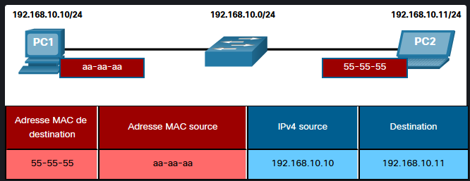
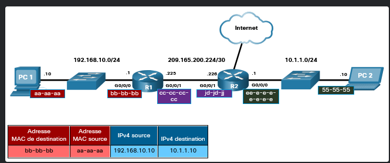
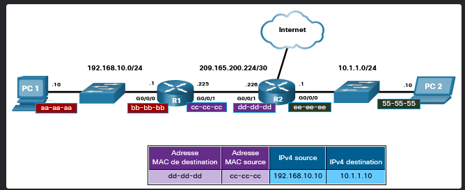
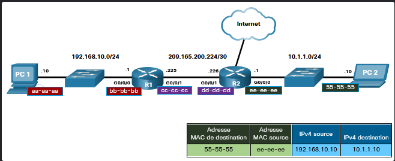

Module 9 : Résolution d’adresse
Adresses logiques (IP) aux adresses physiques (MAC) au sein d’un réseau local
1 Adresses MAC et IP
1.1 Destination sur le même réseau (LAN local)
-
Double adressage :
- Chaque carte réseau sur un LAN Ethernet possède une adresse physique (MAC, couche 2) et une adresse logique (IP, couche 3).
-
Rôle des adresses :
-
Adresse IP :
- Identifie l’émetteur source et le destinataire final du paquet (inchangée de bout en bout).
-
Adresse MAC :
- Transporte le paquet d’une carte réseau à une autre sur le même segment Ethernet local.
-
-
Comportement : Pour envoyer un paquet à un hôte situé sur le même réseau IP, la trame Ethernet utilise l’adresse MAC exacte de l’hôte distant comme MAC de destination.

1.2 Destination sur un réseau distant
-
Rôle de la passerelle par défaut :
- Lorsque l’adresse IP de destination se trouve sur un réseau distant, le paquet est transmis à l’interface du routeur local (passerelle par défaut).
-
Évolution des adresses le long du chemin :
-
Les adresses IP (source/destination) restent constantes pendant tout le trajet.
-
Les adresses MAC (source/destination) changent à chaque saut (hop-by-hop) au fur et à mesure que le paquet est ré-encapsulé dans une nouvelle trame sur chaque tronçon.



-
-
Mécanisme de résolution d’adresse :
-
En IPv4, le protocole ARP (Address Resolution Protocol) permet d’associer une adresse IP à une adresse MAC.
-
En IPv6, le protocole ND (Neighbor Discovery / ICMPv6) assure cette fonction.
-
2 ARP (Address Resolution Protocol)
2.1 Présentation ARP
-
Rôle principal :
- Associer une adresse IPv4 à une adresse MAC Ethernet unique sur le même réseau local.
-
Contenu d’une trame Ethernet IPv4 :
-
Adresse MAC source : Adresse de l’expéditeur.
-
Adresse MAC de destination : Adresse du destinataire local ou de la passerelle par défaut si le destinataire est distant.
-
-
Fonctions clés d’ARP :
-
Résoudre les adresses IPv4 en adresses MAC.
-
Maintenir à jour une table de mappage d’adresses (cache ARP).
-
2.2 Fonctions du protocole ARP
-
Consulter la table ARP :
-
Avant d’envoyer un paquet, l’hôte recherche dans sa mémoire RAM (cache ARP) le mappage IPv4 <-> MAC correspondant.
-
Destination locale :
- Recherche directe de l’IP du destinataire.
-
Destination distante :
- Recherche de l’IP de la passerelle par défaut.
-
-
Déclenchement :
- Si l’adresse IP figure dans le cache, sa MAC est utilisée. Si l’entrée est absente, l’hôte génère une requête ARP.
2.3 Requête ARP
-
Encapsulation : Directement dans une trame Ethernet (
Type = 0x806), sans en-tête IPv4. -
Adresse MAC de destination : Adresse de diffusion (Broadcast :
FF-FF-FF-FF-FF-FF). -
Traitement par le réseau :
-
Le Switch diffuse la trame sur tous les ports sauf le port récepteur.
-
Tous les hôtes du LAN reçoivent et examinent la requête.
-
Seul l’hôte possédant l’IP cible traitera le message, les autres l’ignorent.
-
Les routeurs ne transfèrent pas les diffusions ARP vers d’autres interfaces.
-
2.4 Réponse ARP
-
Encapsulation : Envoyée en monodiffusion (Unicast) directement à l’expéditeur de la requête (
Type = 0x806). -
Mise en cache : L’émetteur initial reçoit la réponse et ajoute le couple IP/MAC dans sa table ARP pour encapsuler les futurs paquets.
-
Échec : Si aucun équipement ne répond, le paquet est abandonné (dropped).
2.5 Rôle d’ARP dans les communications à distance
-
L’hôte compare l’IP de destination avec son sous-réseau.
-
Si le réseau est distant, il recherche l’adresse MAC de la passerelle par défaut dans son cache ARP.
-
Si l’entrée n’existe pas, une requête ARP est envoyée pour obtenir la MAC du routeur local.
2.6 Suppression des entrées d’une table ARP
-
Minuteur d’expiration (Aging Timer) : Les entrées dynamiques non utilisées sont supprimées après un délai défini par le système d’exploitation (ex: 15 à 45 secondes sur Windows).
-
Entrées statiques : Peuvent être ajoutées manuellement mais n’expirent pas automatiquement.
-
Effacement manuel : Commande CLI pour vider le cache ARP en cas de besoin.
Commande Cisco IOS & Commandes Hôtes
2.7 Tables ARP sur les périphériques réseau
Affichage de la table ARP
-
Sur un routeur Cisco IOS :
-
Commande :
show ip arp
-
Affiche la correspondance entre l’adresse IP (
Address), l’âge de l’entrée en minutes (Age (min)), l’adresse MAC (Hardware Addr), le type d’encapsulation (ARPA) et l’interface de sortie (Interface). -
Un tiret (
-) dans la colonneAgeindique une interface locale du routeur.
-
-
Sur un hôte Windows :
-
Commande :
arp -a
-
Affiche les adresses IPv4 (
Internet Address), les adresses MAC (Physical Address) et le type d’attribution (dynamicoustatic). -
Les entrées dynamiques sont apprises via le processus ARP, tandis que les entrées statiques correspondent aux adresses de diffusion local/multicast (ex:
255.255.255.255ou224.0.0.22).
-
# Cisco IOS
R1# show ip arp # Afficher la table ARP
R1# clear arp-cache # Vider le cache ARP
# Windows CLI
C:\Users\PC> arp -a # Afficher la table ARP
C:\Users\PC> arp -d # Vider le cache ARP (nécessite les droits admin)
# Afficher la table ARP sur un routeur Cisco
Router# show ip arp
# Vider la table ARP sur Cisco IOS
Router# clear arp-cache
# Commandes ARP sur Windows / Linux
C:\> arp -a # Afficher la table ARP
C:\> arp -d # Vider la table ARP
3 Découverte de voisins IPv6 (NDP / ND)
3.1 Présentation de IPv6 Neighbor Discovery
-
Rôle :
- Protocole de couche liaison de données pour IPv6 assurant la résolution d’adresses IPv6 en adresses MAC, la détection des routeurs et la redirection sur le réseau local.
-
Protocole sous-jacent :
- Utilise les messages ICMPv6 (remplace ARP d’IPv4).
3.2 Messages de découverte de voisins ICMPv6
Le protocole NDP s’appuie sur 5 messages ICMPv6 principaux :
-
Messagerie de périphérique à périphérique (Résolution d’adresses) :
-
Sollicitation de voisin (Neighbor Solicitation - NS) : Envoyé par un hôte pour demander l’adresse MAC d’un voisin IPv6.
-
Annonce de voisin (Neighbor Advertisement - NA) : Envoyé en réponse pour fournir son adresse MAC.
-
-
Messagerie de routeur à périphérique (Découverte de routeurs & SLAAC) : 3. Sollicitation de routeur (Router Solicitation - RS) : Envoyé par un hôte pour localiser les routeurs IPv6 du segment.
- Annonce de routeur (Router Advertisement - RA) : Envoyé par les routeurs pour fournir les préfixes IP et paramètres d’autoconfiguration.
-
Optimisation de la trajectoire : 5. Redirection (Redirect) : Envoyé par un routeur pour informer un hôte d’un meilleur saut suivant (next-hop).
3.3 Résolution d’adresses IPv6 (Processus NS / NA)
Lorsqu’un hôte IPv6 connaît l’adresse IPv6 d’un destinataire local mais pas sa MAC :
-
Envoi de la Sollicitation de Voisin (NS) :
-
Message : “Qui possède l’adresse 2001:db8:acad:1::11 ? Envoyez-moi votre adresse MAC.”
-
Destination : Envoyé à une adresse IPv6 de multidiffusion de nœud sollicité (Solicited-Node Multicast) et encapsulé dans une trame de multidiffusion Ethernet dédiée.
-
Avantage : Seule la carte réseau ciblée traite le message au niveau matériel, évitant d’inonder tous les hôtes du LAN comme le fait le Broadcast ARP.
-
-
Réponse par l’Annonce de Voisin (NA) :
-
Message : “Je suis 2001:db8:acad:1::11 et mon adresse MAC est F8-94-C3-E4-C5-0A.”
-
Destination : Envoyé directement en monodiffusion (Unicast) à l’hôte demandeur.
-
[ Processus de Résolution d'Adresse ICMPv6 ]
PC1 (:10) PC2 (:11)
| |
|--- (ICMPv6 NS - Multidiffusion nœud sollicité) -------->|
| "Qui a l'IP 2001:db8:acad:1::11 ?" |
| |
|<-- (ICMPv6 NA - Monodiffusion / Unicast) ---------------|
| "Je suis :11, ma MAC est F8-94-C3-E4-C5-0A" |
v v
[ Cache Voisins IPv6 mis à jour ]